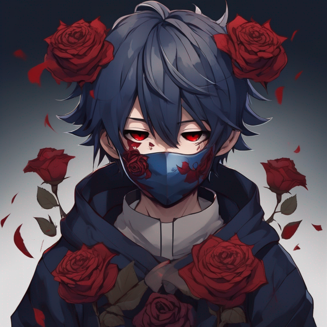
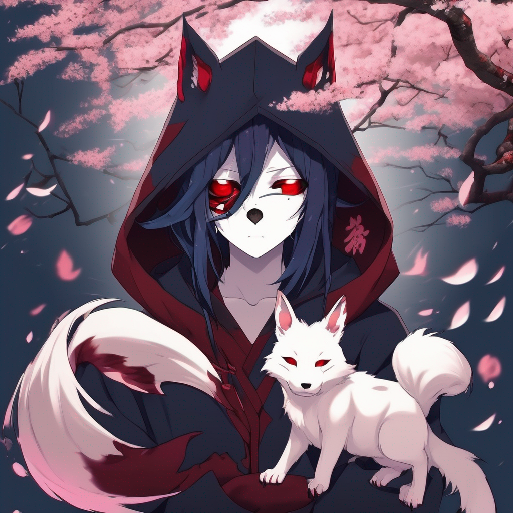

Hello everyone, Iam "Zamaso" an
Anime lover
Today iam going to give you an Introduction to
Anime !
Do you know what is Anime? ...
Do you have any idea what could it be? ...
Will you be able to imagine a world full of fantasy and unrealistic characters?
Well, Iam going to give you a
small introduction. Then,
Iam going to tell you everything (Full-description) about
Anime!
Anime is a place of imagination only. So, it doesn't exist in real life. (But Some people in some countries do some shows in streets to show people that they believe that Anime exists in Real Life).
Characters in Anime are
Unrealistic looking characters, they have magic powers and their behaviour and appearence is not
like real humans ones. Even though, that their world is
like an imaginary world
[Fantasy world as we said].
Anime (Japanese: アニメ) is hand-drawn and computer-generated animation originating from Japan. Outside Japan and in English, anime refers specifically to animation produced in Japan. However, in Japan and in Japanese, anime (a term derived from a shortening of the English word animation) describes all animated works, regardless of style or origin. Many works of animation with a similar style to Japanese animation are also produced outside Japan. Video games sometimes also feature themes and artstyles that can be considered as "Anime".
The earliest commercial Japanese animations date to 1917. A characteristic art style emerged in the 1960s with the works of cartoonist Osamu Tezuka and spread in following decades, developing a large domestic audience. Anime is distributed theatrically, through television broadcasts, directly to home media, and over the Internet. In addition to original works, anime are often adaptations of Japanese comics (Manga), light novels, or video games. It is classified into numerous genres targeting various broad and niche audiences.
Anime is a diverse medium with distinctive production methods that have adapted in response to emergent technologies. It combines graphic art, characterization, cinematography, and other forms of imaginative and individualistic techniques. Compared to Western animation, anime production generally focuses less on movement, and more on the detail of settings and use of "camera effects", such as panning, zooming, and angle shots. Diverse art styles are used, and character proportions and features can be quite varied, with a common characteristic feature being large and emotive eyes.
The anime industry consists of over 430 production companies, including major studios such as: "Studio Ghibli, Kyoto Animation, Sunrise, Bones, Ufotable, MAPPA, Wit Studio, CoMix Wave Films, Production I.G, and Toei Animation". Since the 1980s, the medium has also seen widespread international success with the rise of foreign dubbed, subtitled programming, and since the 2010s its increasing distribution through streaming services and a widening demographic embrace of anime culture, both within Japan and worldwide. As of 2016, Japanese animation accounted for 60% of the world's animated television shows.
Well, as we said in our introduction that Anime is a world of Fantasy that contains imaginary things, worlds and characters.
Lemme now tell you What is Anime? but in details an a detailed discussion also we can interview a friend of mine who can share with us but after we finish our explaination about Anime
  as we can see in both of these 2 images that both of the guys look Unrealistic
Have you ever in you life seen someone with a fox face (as shown in image no.2)
Have you seen a human before with that skin it looks too fair and likley to be smooth (as shown in image no.1)
Have you seen a human before with deep red eyes (as shown in both images 1 and 2)
As we can see now, that Anime has some properties like that they are Unrealistic and Imaginary.
Well let's put on a list now that shows most of the properties of Anime
Etymology:
As a type of animation, anime is an art form that comprises many genres found in other mediums; it is sometimes mistakenly classified as a genre itself. In Japanese, the term anime is used to refer to all animated works, regardless of style or origin. English-language dictionaries typically define anime (/ˈænɪmeɪ/) as "a style of Japanese animation" or as "a style of animation originating in Japan". Other definitions are based on origin, making production in Japan a requisite for a work to be considered "anime".
The etymology of the term anime is disputed. The English word "animation" is written in Japanese katakana as アニメーション (animēshon) and as アニメ (anime, pronounced [a.ɲi.me] ) in its shortened form. Some sources claim that the term is derived from the French term for animation dessin animé ("cartoon", literally 'animated drawing'), but others believe this to be a myth derived from the popularity of anime in France in the late 1970s and 1980s.
In English, anime—when used as a common noun—normally functions as a mass noun. (For example: "Do you watch anime?" or "How much anime have you collected?") As with a few other Japanese words, such as saké and Pokémon, English texts sometimes spell anime as animé (as in French), with an acute accent over the final e, to cue the reader to pronounce the letter, not to leave it silent as English orthography may suggest. Prior to the widespread use of anime, the term Japanimation, a portmanteau of Japan and animation, was prevalent throughout the 1970s and 1980s. In the mid-1980s, the term anime began to supplant Japanimation; in general, the latter term now only appears in period works where it is used to distinguish and identify Japanese animation.
History:
Precursors:
Emakimono and kagee are considered precursors of Japanese animation. Emakimono was common in the eleventh century. Traveling storytellers narrated legends and anecdotes while the emakimono was unrolled from the right to left in chronological order, as a moving panorama. Kagee was popular during the Edo period and originated from the shadows play of China. Magic lanterns from the Netherlands were also popular in the eighteenth century. The paper play called Kamishibai surged in the twelfth century and remained popular in the street theater until the 1930s. Puppets of the bunraku theater and ukiyo-e prints are considered ancestors of characters of most Japanese animations. Finally, mangas were a heavy inspiration for anime. Cartoonists Kitzawa Rakuten and Okamoto Ippei used film elements in their strips.
Pioneers:
Animation in Japan began in the early 20th century, when filmmakers started to experiment with techniques pioneered in France, Germany, the United States, and Russia. A claim for the earliest Japanese animation is Katsudō Shashin (c. 1907), a private work by an unknown creator. In 1917, the first professional and publicly displayed works began to appear; animators such as Ōten Shimokawa, Seitarō Kitayama, and Jun'ichi Kōuchi (considered the "fathers of anime") produced numerous films, the oldest surviving of which is Kōuchi's Namakura Gatana. Many early works were lost with the destruction of Shimokawa's warehouse in the 1923 Great Kantō earthquake.
By the mid-1930s, animation was well-established in Japan as an alternative format to the live-action industry. It suffered competition from foreign producers, such as Disney, and many animators, including Noburō Ōfuji and Yasuji Murata, continued to work with cheaper cutout animation rather than cel animation. Other creators, including Kenzō Masaoka and Mitsuyo Seo, nevertheless made great strides in technique, benefiting from the patronage of the government, which employed animators to produce educational shorts and propaganda. In 1940, the government dissolved several artists' organizations to form the Shin Nippon Mangaka Kyōkai. The first talkie anime was Chikara to Onna no Yo no Naka (1933), a short film produced by Masaoka. The first feature-length anime film was Momotaro: Sacred Sailors (1945), produced by Seo with a sponsorship from the Imperial Japanese Navy. The 1950s saw a proliferation of short, animated advertisements created for television.
Modern era:
In the 1960s, manga artist and animator Osamu Tezuka adapted and simplified Disney animation techniques to reduce costs and limit frame counts in his productions. Originally intended as temporary measures to allow him to produce material on a tight schedule with an inexperienced staff, many of his limited animation practices came to define the medium's style. Three Tales (1960) was the first anime film broadcast on television; the first anime television series was Instant History (1961–64). An early and influential success was Astro Boy (1963–66), a television series directed by Tezuka based on his manga of the same name. Many animators at Tezuka's Mushi Production later established major anime studios (including Madhouse, Sunrise, and Pierrot).
The 1970s saw growth in the popularity of manga, many of which were later animated. Tezuka's work—and that of other pioneers in the field—inspired characteristics and genres that remain fundamental elements of anime today. The giant robot genre (also known as "mecha"), for instance, took shape under Tezuka, developed into the super robot genre under Go Nagai and others, and was revolutionized at the end of the decade by Yoshiyuki Tomino, who developed the real robot genre. Robot anime series such as Gundam and Super Dimension Fortress Macross became instant classics in the 1980s, and the genre remained one of the most popular in the following decades. The bubble economy of the 1980s spurred a new era of high-budget and experimental anime films, including Nausicaä of the Valley of the Wind (1984), Royal Space Force: The Wings of Honnêamise (1987), and Akira (1988).
Neon Genesis Evangelion (1995), a television series produced by Gainax and directed by Hideaki Anno, began another era of experimental anime titles, such as Ghost in the Shell (1995) and Cowboy Bebop (1998). In the 1990s, anime also began attracting greater interest in Western countries; major international successes include Sailor Moon and Dragon Ball Z, both of which were dubbed into more than a dozen languages worldwide. In 2003, Spirited Away, a Studio Ghibli feature film directed by Hayao Miyazaki, won the Academy Award for Best Animated Feature at the 75th Academy Awards. It later became the highest-grossing anime film, earning more than $355 million. Since the 2000s, an increased number of anime works have been adaptations of light novels and visual novels; successful examples include The Melancholy of Haruhi Suzumiya and Fate/stay night (both 2006). Demon Slayer: Kimetsu no Yaiba the Movie: Mugen Train became the highest-grossing Japanese film and one of the world's highest-grossing films of 2020. It also became the fastest grossing film in Japanese cinema, because in 10 days it made 10 billion yen ($95.3m; £72m). It beat the previous record of Spirited Away which took 25 days.
In 2021, the anime adaptations of Jujutsu Kaisen, Demon Slayer: Kimetsu no Yaiba and Tokyo Revengers were among the top 10 most discussed TV shows worldwide on Twitter. In 2022, Attack on Titan won the award of "Most In-Demand TV Series in the World 2021" in the Global TV Demand Awards. Attack on Titan became the first ever non-English language series to earn the title of World's Most In-Demand TV Show, previously held by only The Walking Dead and Game of Thrones.
Attributes:
Anime differs from other forms of animation by its art styles, methods of animation, its production, and its process. Visually, anime works exhibit a wide variety of art styles, differing between creators, artists, and studios. While no single art style predominates anime as a whole, they do share some similar attributes in terms of animation technique and character design.
Anime is fundamentally characterized by the use of limited animation, flat expression, the suspension of time, its thematic range, the presence of historical figures, its complex narrative line and, above all, a peculiar drawing style, with characters characterized by large and oval eyes, with very defined lines, bright colors and reduced movement of the lips.
Technique:
Modern anime follows a typical animation production process, involving storyboarding, voice acting, character design, and cel production. Since the 1990s, animators have increasingly used computer animation to improve the efficiency of the production process. Early anime works were experimental, and consisted of images drawn on blackboards, stop motion animation of paper cutouts, and silhouette animation. Cel animation grew in popularity until it came to dominate the medium. In the 21st century, the use of other animation techniques is mostly limited to independent short films, including the stop motion puppet animation work produced by Tadahito Mochinaga, Kihachirō Kawamoto and Tomoyasu Murata. Computers were integrated into the animation process in the 1990s, with works such as Ghost in the Shell and Princess Mononoke mixing cel animation with computer-generated images. Fuji Film, a major cel production company, announced it would stop cel production, producing an industry panic to procure cel imports and hastening the switch to digital processes.
Prior to the digital era, anime was produced with traditional animation methods using a pose to pose approach. The majority of mainstream anime uses fewer expressive key frames and more in-between animation.
Japanese animation studios were pioneers of many limited animation techniques, and have given anime a distinct set of conventions. Unlike Disney animation, where the emphasis is on the movement, anime emphasizes the art quality and let limited animation techniques make up for the lack of time spent on movement. Such techniques are often used not only to meet deadlines but also as artistic devices. Anime scenes place emphasis on achieving three-dimensional views, and backgrounds are instrumental in creating the atmosphere of the work. The backgrounds are not always invented and are occasionally based on real locations, as exemplified in Howl's Moving Castle and The Melancholy of Haruhi Suzumiya. Oppliger stated that anime is one of the rare mediums where putting together an all-star cast usually comes out looking "tremendously impressive".
The cinematic effects of anime differentiates itself from the stage plays found in American animation. Anime is cinematically shot as if by camera, including panning, zooming, distance and angle shots to more complex dynamic shots that would be difficult to produce in reality. In anime, the animation is produced before the voice acting, contrary to American animation which does the voice acting first.
Characters:
The body proportions of human anime characters tend to accurately reflect the proportions of the human body in reality. The height of the head is considered by the artist as the base unit of proportion. Head heights can vary, but most anime characters are about seven to eight heads tall. Anime artists occasionally make deliberate modifications to body proportions to produce super deformed characters that feature a disproportionately small body compared to the head; many super deformed characters are two to four heads tall. Some anime works like Crayon Shin-chan completely disregard these proportions, in such a way that they resemble caricatured Western cartoons.
A common anime character design convention is exaggerated eye size. The animation of characters with large eyes in anime can be traced back to Osamu Tezuka, who was deeply influenced by such early animation characters as Betty Boop, who was drawn with disproportionately large eyes. Tezuka is a central figure in anime and manga history, whose iconic art style and character designs allowed for the entire range of human emotions to be depicted solely through the eyes. The artist adds variable color shading to the eyes and particularly to the cornea to give them greater depth. Generally, a mixture of a light shade, the tone color, and a dark shade is used. Cultural anthropologist Rachel Thorn argues that Japanese animators and audiences do not perceive such stylized eyes as inherently more or less foreign. However, not all anime characters have large eyes. For example, the works of Hayao Miyazaki are known for having realistically proportioned eyes, as well as realistic hair colors on their characters.
Hair in anime is often unnaturally lively and colorful or uniquely styled. The movement of hair in anime is exaggerated and "hair actions" is used to emphasize the action and emotions of characters for added visual effect. Poitras traces hairstyle color to cover illustrations on manga, where eye-catching artwork and colorful tones are attractive for children's manga. Despite being produced for a domestic market, anime features characters whose race or nationality is not always defined, and this is often a deliberate decision, such as in the Pokémon animated series.
Anime and manga artists often draw from a common canon of iconic facial expression illustrations to denote particular moods and thoughts. These techniques are often different in form than their counterparts in Western animation, and they include a fixed iconography that is used as shorthand for certain emotions and moods. For example, a male character may develop a nosebleed when aroused. A variety of visual symbols are employed, including sweat drops to depict nervousness, visible blushing for embarrassment, or glowing eyes for an intense glare. Another recurring sight gag is the use of chibi (deformed, simplified character designs) figures to comedically punctuate emotions like confusion or embarrassment.
Music:
The opening and credits sequences of most anime television series are accompanied by J-pop or J-rock songs, often by reputed bands—as written with the series in mind—but are also aimed at the general music market, therefore they often allude only vaguely or not at all, to the thematic settings or plot of the series. Also, they are often used as incidental music ("insert songs") in an episode, in order to highlight particularly important scenes.
Future funk, a musical microgenre that evolved in the early 2010's from Vaporwave with a French house Euro disco influence, heavily uses anime visuals and samples along with Japanese City pop to build an aesthetic.
Since the 2020's anime songs have experienced a rapid growth in global online popularity due to their widened availability on music streaming services like Spotify and promotion by fans and artists on social media. In 2023, the opening theme Idol by YOASOBI of the anime series Oshi no Ko topped the Billboard Global 200 Excl. U.S. charts with 45.7 million streams and 24,000 copies sold outside the U.S. “Idol” has become the first Japanese song and anime song to top the Billboard Global chart as well as taking the first spot on the Apple Music's Top 100: Global chart.
Genres:
Anime are often classified by target demographic, including children's (子供, kodomo), girls' (少女, shōjo), boys' (少年, shōnen), young men (青年, Seinen), young women (女性, josei) and a diverse range of genres targeting an adult audience. Shoujo and shounen anime sometimes contain elements popular with children of all genders in an attempt to gain crossover appeal. Adult anime may feature a slower pace or greater plot complexity that younger audiences may typically find unappealing, as well as adult themes and situations. A subset of adult anime works featuring pornographic elements are labeled "R18" in Japan, and are internationally known as hentai (originating from pervert (変態, hentai)). By contrast, some anime subgenres incorporate ecchi, offensive themes or undertones without depictions of sexual intercourse, as typified in the comedic or harem genres; due to its popularity among adolescent and adult anime enthusiasts, the inclusion of such elements is considered a form of fan service. Some genres explore homosexual romances, such as yaoi (male homosexuality) and yuri (female homosexuality). While often used in a pornographic context, the terms yaoi and yuri can also be used broadly in a wider context to describe or focus on the themes or the development of the relationships themselves.
Anime's genre classification differs from other types of animation and does not lend itself to simple classification. Gilles Poitras compared the labeling of Gundam 0080 and its complex depiction of war as a "giant robot" anime akin to simply labeling War and Peace a "war novel". Science fiction is a major anime genre and includes important historical works like Tezuka's Astro Boy and Yokoyama's Tetsujin 28-go. A major subgenre of science fiction is mecha, with the Gundam metaseries being iconic. The diverse fantasy genre includes works based on Asian and Western traditions and folklore; examples include the Japanese feudal fairytale InuYasha, and the depiction of Scandinavian goddesses who move to Japan to maintain a computer called Yggdrasil in Ah! My Goddess. Genre crossing in anime is also prevalent, such as the blend of fantasy and comedy in Dragon Half, and the incorporation of slapstick humor in the crime anime film Castle of Cagliostro. Other subgenres found in anime include magical girl, harem, sports, martial arts, literary adaptations, medievalism, and war.
Formats:
Early anime works were made for theatrical viewing, and required played musical components before sound and vocal components were added to the production. In 1958, Nippon Television aired Mogura no Abanchūru ("Mole's Adventure"), both the first televised and first color anime to debut. It was not until the 1960s when the first televised series were broadcast and it has remained a popular medium since. Works released in a direct-to-video format are called "original video animation" (OVA) or "original animation video" (OAV); and are typically not released theatrically or televised prior to home media release. The emergence of the Internet has led some animators to distribute works online in a format called "original net animation" (ONA).
The home distribution of anime releases was popularized in the 1980s with the VHS and LaserDisc formats. The VHS NTSC video format used in both Japan and the United States is credited with aiding the rising popularity of anime in the 1990s. The LaserDisc and VHS formats were transcended by the DVD format which offered the unique advantages; including multiple subtitling and dubbing tracks on the same disc. The DVD format also has its drawbacks in its usage of region coding; adopted by the industry to solve licensing, piracy and export problems and restricted region indicated on the DVD player. The Video CD (VCD) format was popular in Hong Kong and Taiwan, but became only a minor format in the United States that was closely associated with bootleg copies.
A key characteristic of many anime television shows is serialization, where a continuous story arc stretches over multiple episodes or seasons. Traditional American television had an episodic format, with each episode typically consisting of a self-contained story. In contrast, anime shows such as Dragon Ball Z had a serialization format, where continuous story arcs stretch over multiple episodes or seasons, which distinguished them from traditional American television shows; serialization has since also become a common characteristic of American streaming television shows during the "Peak TV" era.
Industry:
The animation industry consists of more than 430 production companies with some of the major studios including Toei Animation, Gainax, Madhouse, Gonzo, Sunrise, Bones, TMS Entertainment, Nippon Animation, P.A.Works, Studio Pierrot, Production I.G, Ufotable and Studio Ghibli. Many of the studios are organized into a trade association, The Association of Japanese Animations. There is also a labor union for workers in the industry, the Japanese Animation Creators Association. Studios will often work together to produce more complex and costly projects, as done with Studio Ghibli's Spirited Away. An anime episode can cost between US$100,000 and US$300,000 to produce. In 2001, animation accounted for 7% of the Japanese film market, above the 4.6% market share for live-action works. The popularity and success of anime is seen through the profitability of the DVD market, contributing nearly 70% of total sales. According to a 2016 article on Nikkei Asian Review, Japanese television stations have bought over ¥60 billion worth of anime from production companies "over the past few years", compared with under ¥20 billion from overseas. There has been a rise in sales of shows to television stations in Japan, caused by late night anime with adults as the target demographic. This type of anime is less popular outside Japan, being considered "more of a niche product". Spirited Away (2001) was the all-time highest-grossing film in Japan until overtaken by Demon Slayer: Kimetsu no Yaiba – The Movie: Mugen Train in 2020. It was also the highest-grossing anime film worldwide until it was overtaken by Makoto Shinkai's 2016 film Your Name. Anime films represent a large part of the highest-grossing Japanese films yearly in Japan, with 6 out of the top 10 in 2014, in 2015 and also in 2016.
Anime has to be licensed by companies in other countries in order to be legally released. While anime has been licensed by its Japanese owners for use outside Japan since at least the 1960s, the practice became well-established in the United States in the late 1970s to early 1980s, when such TV series as Gatchaman and Captain Harlock were licensed from their Japanese parent companies for distribution in the US market. The trend towards American distribution of anime continued into the 1980s with the licensing of titles such as Voltron and the 'creation' of new series such as Robotech through the use of source material from several original series.
In the early 1990s, several companies began to experiment with the licensing of less children-oriented material. Some, such as A.D. Vision, and Central Park Media and its imprints, achieved fairly substantial commercial success and went on to become major players in the now very lucrative American anime market. Others, such as AnimEigo, achieved limited success. Many companies created directly by Japanese parent companies did not do as well, most releasing only one or two titles before completing their American operations.
Licenses are expensive, often hundreds of thousands of dollars for one series and tens of thousands for one movie. The prices vary widely; for example, Jinki: Extend cost only $91,000 to license while Kurau Phantom Memory cost $960,000. Simulcast Internet streaming rights can be cheaper, with prices around $1,000–2,000 an episode, but can also be more expensive, with some series costing more than US$200,000 per episode.
The anime market for the United States was worth approximately $2.74 billion in 2009. Dubbed animation began airing in the United States in 2000 on networks like The WB and Cartoon Network's Adult Swim. In 2005, this resulted in five of the top ten anime titles having previously aired on Cartoon Network. As a part of localization, some editing of cultural references may occur to better follow the references of the non-Japanese culture. The cost of English localization averages US$10,000 per episode.
The industry has been subject to both praise and condemnation for fansubs, the addition of unlicensed and unauthorized subtitled translations of anime series or films. Fansubs, which were originally distributed on VHS bootlegged cassettes in the 1980s, have been freely available and disseminated online since the 1990s. Since this practice raises concerns for copyright and piracy issues, fansubbers tend to adhere to an unwritten moral code to destroy or no longer distribute an anime once an official translated or subtitled version becomes licensed. They also try to encourage viewers to buy an official copy of the release once it comes out in English, although fansubs typically continue to circulate through file-sharing networks. Even so, the laid back regulations of the Japanese animation industry tend to overlook these issues, allowing it to grow underground and thus increasing its popularity until there is a demand for official high-quality releases for animation companies. This has led to an increase in global popularity of Japanese animations, reaching $40 million in sales in 2004.
Since the 2010s anime has become a global multibillion industry setting a sales record in 2017 of ¥2.15 trillion ($19.8 billion), driven largely by demand from overseas audiences. In 2019, Japan's anime industry was valued at $24 billion a year with 48% of that revenue coming from overseas (which is now its largest industry sector). By 2025 the anime industry is expected to reach a value of $30 billion with over 60% of that revenue coming from overseas.
Markets:
Japan External Trade Organization (JETRO) valued the domestic anime market in Japan at ¥2.4 trillion ($24 billion), including ¥2 trillion from licensed products, in 2005. JETRO reported sales of overseas anime exports in 2004 to be ¥2 trillion ($18 billion). JETRO valued the anime market in the United States at ¥520 billion ($5.2 billion), including $500 million in home video sales and over $4 billion from licensed products, in 2005. JETRO projected in 2005 that the worldwide anime market, including sales of licensed products, would grow to ¥10 trillion ($100 billion). The anime market in China was valued at $21 billion in 2017, and is projected to reach $31 billion by 2020. The global anime market size was valued at $26.055 billion in 2021 with 29% of the revenue coming from merchandise. It is expected that the global anime market will reach a value of $47.14 billion by 2028. By 2030 the global anime market is expected to reach a value of $48.3 Billion with the largest contributors to this growth being North America, Europe, China and The Middle East. In 2019, the annual overseas exports of Japanese animation exceeded $10 billion for the first time in history.
Awards:
The anime industry has several annual awards that honor the year's best works. Major annual awards in Japan include the Ōfuji Noburō Award, the Mainichi Film Award for Best Animation Film, the Animation Kobe Awards, the Japan Media Arts Festival animation awards, the Seiyu Awards for voice actors, the Tokyo Anime Award and the Japan Academy Prize for Animation of the Year. In the United States, anime films compete in the Crunchyroll Anime Awards. There were also the American Anime Awards, which were designed to recognize excellence in anime titles nominated by the industry, and were held only once in 2006. Anime productions have also been nominated and won awards not exclusively for anime, like the Academy Award for Best Animated Feature or the Golden Bear.
Working conditions:
In recent years, the anime industry has been accused by both Japanese and foreign media of underpaying and overworking its animators. In response the Japanese Prime Minister Fumio Kishida promised to improve the working conditions and salary of all animators and creators working in the industry. A few anime studios such as MAPPA have taken actions to improve the working conditions of their employees. There has also been a slight increase in production costs and animator pays during the COVID-19 pandemic. On April 27, 2023, Nippon Anime Film Culture Association (NAFCA) was officially founded. The association aims to solve problems in the industry, including the improvement of conditions of the workers.
Globalization and cultural impact:
Anime has become commercially profitable in Western countries, as demonstrated by early commercially successful Western adaptations of anime, such as Astro Boy and Speed Racer. Early American adaptions in the 1960s made Japan expand into the continental European market, first with productions aimed at European and Japanese children, such as Heidi, Vicky the Viking and Barbapapa, which aired in various countries. Italy, Spain, and France grew a particular interest in Japan's output, due to its cheap selling price and productive output. As of 2014, Italy imported the most anime outside Japan. Anime and manga were introduced to France in the late 1970s and became massively popular in spite of a moral panic led by French politicians in the 1980s and 1990s. These mass imports influenced anime popularity in South American, Arabic and German markets.
The beginning of 1980 saw the introduction of Japanese anime series into the American culture. In the 1990s, Japanese animation slowly gained popularity in America. Media companies such as Viz and Mixx began publishing and releasing animation into the American market. The 1988 film Akira is largely credited with popularizing anime in the Western world during the early 1990s, before anime was further popularized by television shows such as Pokémon and Dragon Ball Z in the late 1990s. By 1997, Japanese anime was the fastest-growing genre in the American video industry. The growth of the Internet later provided international audiences with an easy way to access Japanese content. Early on, online piracy played a major role in this, through over time many legal alternatives appeared. Since the 2010s various streaming services have become increasingly involved in the production and licensing of anime for the international markets. This is especially the case with net services such as Netflix and Crunchyroll which have large catalogs in Western countries, although as of 2020 anime fans in many developing non-Western countries, such as India and Philippines, have fewer options for obtaining access to legal content, and therefore still turn to online piracy. However beginning with the 2020s anime has been experiencing yet another boom in global popularity and demand due to the COVID-19 pandemic and streaming services like Netflix, Amazon Prime Video, HBO Max, Disney+, Hulu and anime-only services like Crunchyroll and Hidive, increasing the international availability of the amount of new licensed anime shows as well as the size of their catalogs. Netflix reported that, between October 2019 and September 2020, more than 100 million member households worldwide had watched at least one anime title on the platform. Anime titles appeared on the streaming platform's top-ten lists in almost 100 countries within the one-year period. As of 2021, anime series are the most demanded foreign-language television shows in the United States accounting for 30.5% of the market share. (In comparison, Spanish-language and Korean-language shows account for 21% and 11% of the market share, respectively.) In 2021 more than half of Netflix's global members watched anime. In 2022, the anime series Attack on Titan won the award of "Most In-Demand TV Series in the World 2021" in the Global TV Demand Awards. Attack on Titan became the first ever non-English language series to earn the title of "World's Most In-Demand TV Show", previously held by only The Walking Dead and Game of Thrones.
Rising interest in anime as well as Japanese video games has led to an increase of university students in the United Kingdom wanting to get a degree in the Japanese language. The word anime alongside other Japanese pop cultural terms like shonen and shojo have been added to the Oxford English Dictionary.
Various anime and manga series have influenced Hollywood in the making of numerous famous movies and characters. Hollywood itself has produced live-action adaptations of various anime series such as Ghost in the Shell, Death Note, Dragon Ball Evolution and Cowboy Bebop. However most of these adaptations have been reviewed negatively by both the critics and the audience and have become box-office flops. The main reasons for the unsuccessfulness of Hollywood's adaptions of anime being the often change of plot and characters from the original source material and the limited capabilities a live-action movie or series can do in comparison to an animated counterpart. One particular exception however is Alita: Battle Angel, which has become a moderate commercial success, receiving generally positive reviews from both the critics and the audience for its visual effects and following the source material. The movie grossed $404 million worldwide, making it director Robert Rodriguez's highest-grossing film.
Anime and manga alongside many other parts of Japanese pop culture have helped Japan to gain a positive worldwide image and improve its relations with other countries. In 2015, during remarks welcoming Japanese Prime Minister Shinzo Abe to the White House, President Barack Obama thanked Japan for its cultural contributions to the United States by saying:
This visit is a celebration of the ties of friendship and family that bind our peoples. I first felt it when I was 6 years old when my mother took me to Japan. I felt it growing up in Hawaii, like communities across our country, home to so many proud Japanese Americans... Today is also a chance for Americans, especially our young people, to say thank you for all the things we love from Japan. Like karate and karaoke. Manga and anime. And, of course, emojis.
In July 2020, after the approval of a Chilean government project in which citizens of Chile would be allowed to withdraw up to 10% of their privately held retirement savings, journalist Pamela Jiles celebrated by running through Congress with her arms spread out behind her, imitating the move of many characters of the anime and manga series Naruto. In April 2021, Peruvian politicians Jorge Hugo Romero of the PPC and Milagros Juárez of the UPP cosplayed as anime characters to get the otaku vote.
In April 2023, the Japan Business Federation laid out a proposal aiming to spur the economic growth of Japan by further promoting the contents industry abroad, primarily anime, manga and video games, for measures to invite industry experts from abroad to come to Japan to work, and to link with the tourism sector to help foreign fans of manga and anime visit sites across the country associated with particular manga stories. The federation seeks on quadrupling the sales of Japanese content in overseas markets within the upcoming 10 years.
A 2018 survey conducted in 20 countries and territories using a sample consisting of 6,600 respondents held by Dentsu revealed that 34% of all surveyed people found excellency in anime and manga more than other Japanese cultural or technological aspects which makes this mass Japanese media the 3rd most liked "Japanese thing", below Japanese cuisine (34.6%) and Japanese robotics (35.1%). The advertisement company views anime as a profitable tool for marketing campaigns in foreign countries due to its popularity and high reception. Anime plays a role in driving tourism to Japan. In surveys held by Statista between 2019 and 2020, 24.2% of tourists from the United States, 7.7% of tourists from China and 6.1% of tourists from South Korea said they were motivated to visit Japan because of Japanese popular culture. In a 2021 survey held by Crunchyroll market research, 94% of Gen-Z's and 73% of the general population said that they are familiar with anime.
Fan response:
Anime clubs gave rise to anime conventions in the 1990s with the "anime boom", a period marked by anime's increased global popularity. These conventions are dedicated to anime and manga and include elements like cosplay contests and industry talk panels. Cosplay, a portmanteau of "costume play", is not unique to anime and has become popular in contests and masquerades at anime conventions. Japanese culture and words have entered English usage through the popularity of the medium, including otaku, an unflattering Japanese term commonly used in English to denote an obsessive fan of anime and/or manga. Another word that has arisen describing obsessive fans in the United States is wapanese meaning 'white individuals who want to be Japanese', or later known as weeaboo or weeb, individuals who demonstrate an obsession with Japanese anime subculture, a term that originated from abusive content posted on the website 4chan.org. While originally derogatory, the terms "Otaku" and "Weeb" have been reappropriated by the anime fandom overtime and today are used by some fans to refer to themselves in a comedic and more positive way. Anime enthusiasts have produced fan fiction and fan art, including computer wallpapers and anime music videos (AMVs).
Many fans will visit sites depicted in anime, games, manga and other forms of otaku culture, this behavior is known as "Anime pilgrimage".
As of the 2020s, many anime fans and followers use social media platforms and other sites like YouTube, Twitch, Fandom, Facebook, Reddit, Discord, Tumblr, 4chan, Tiktok and Twitter with online communities and databases such as IMDb, MyAnimeList to discuss anime, manga and track their progress watching respective series as well as using news outlets such as Anime News Network.
Due to anime's increased popularity in recent years, a large number of celebrities such as Elon Musk, BTS and Ariana Grande have come out as anime fans.
Anime style:
One of the key points that made anime different from a handful of Western cartoons is the potential for visceral content. Once the expectation that the aspects of visual intrigue or animation are just for children is put aside, the audience can realize that themes involving violence, suffering, pain, and death can all be storytelling elements utilized in anime just as much as other media.
However, as anime itself became increasingly popular, its styling has been inevitably the subject of both satire and serious creative productions. South Park's "Chinpokomon" and "Good Times with Weapons" episodes, Adult Swim's Perfect Hair Forever, and Nickelodeon's Kappa Mikey are examples of Western satirical depictions of Japanese culture and anime, but anime tropes have also been satirized by some anime such as KonoSuba.
Traditionally only Japanese works have been considered anime, but some works have sparked debate about blurring the lines between anime and cartoons, such as the American anime-style productions Avatar: The Last Airbender and Avatar: The Legend of Korra. These anime-styled works have become defined as anime-influenced animation, in an attempt to classify all anime styled works of non-Japanese origin. Some creators of these works cite anime as a source of inspiration, for example the French production team for Ōban Star-Racers that moved to Tokyo to collaborate with a Japanese production team. When anime is defined as a "style" rather than as a national product, it leaves open the possibility of anime being produced in other countries, but this has been contentious amongst fans, with John Oppliger stating, "The insistence on referring to original American art as Japanese "anime" or "manga" robs the work of its cultural identity."
A U.A.E.-Filipino produced TV series called Torkaizer is dubbed as the "Middle East's First Anime Show", and is currently in production and looking for funding. Netflix has produced multiple anime series in collaboration with Japanese animation studios, and in doing so, has offered a more accessible channel for distribution to Western markets.
The web-based series RWBY, produced by Texas-based company Rooster Teeth, is produced using an anime art style, and the series has been described as "anime" by multiple sources. For example, Adweek, in the headline to one of its articles, described the series as "American-made anime", and in another headline, The Huffington Post described it as simply "anime", without referencing its country of origin. In 2013, Monty Oum, the creator of RWBY, said "Some believe just like Scotch needs to be made in Scotland, an American company can't make anime. I think that's a narrow way of seeing it. Anime is an art form, and to say only one country can make this art is wrong." RWBY has been released in Japan with a Japanese language dub; the CEO of Rooster Teeth, Matt Hullum, commented "This is the first time any American-made anime has been marketed to Japan. It definitely usually works the other way around, and we're really pleased about that."
Media franchises:
In Japanese culture and entertainment, media mix is a strategy to disperse content across multiple representations: different broadcast media, gaming technologies, cell phones, toys, amusement parks, and other methods. It is the Japanese term for a transmedia franchise. The term gained its circulation in late 1980s, but the origins of the strategy can be traced back to the 1960s with the proliferation of anime, with its interconnection of media and commodity goods.
A number of anime and manga media franchises such as Demon Slayer: Kimetsu no Yaiba, Dragon Ball and Gundam have gained considerable global popularity, and are among the world's highest-grossing media franchises. Pokémon in particular is estimated to be the highest-grossing media franchise of all
Another thing is that you will find that we have provided for you many sites to visit to watch anime (and this is in the last section of our Webpage)
Well, i think you have also understood that Anime is important to some Adult workers and graphic designers
I HOPE YOU WILL ENJOY WATCHING ANIME !!!!!!
Well, i think you have found that i have mentioned the word "SAO" in the last section that descripes the "Anime".
Sword Art Online (Japanese: ソードアート・オンライン, Hepburn: Sōdo Āto Onrain) is a Japanese light novel series written by Reki Kawahara and illustrated by abec.
The series takes place in the 2020s and focuses on protagonists Kazuto "Kirito" Kirigaya and Asuna Yuuki as they play through various VRMMORPG
(virtual reality massively multiplayer online role-playing game) worlds, and later their involvement in the matters of a simulated civilization. Kawahara originally wrote the series as a web novel on his website from 2002 to 2008. The light novels began publication on ASCII Media Works' Dengeki Bunko imprint from April 10, 2009, with a spin-off series launching in October 2012. The series has spawned twelve manga adaptations published by ASCII Media Works and Kadokawa. The novels and the manga adaptations have been licensed for release in North America by Yen Press.
An anime television series produced by A-1 Pictures, known simply as Sword Art Online, aired in Japan between July and December 2012, with a television film
Sword Art Online: Extra Edition airing on December 31, 2013, and a second season, titled Sword Art Online II, airing between July and December 2014. An animated film titled Sword Art Online the Movie: Ordinal Scale, featuring an original story by Kawahara, premiered in Japan and Southeast Asia on February 18, 2017, and was released in the United States on March 9, 2017. A spin-off anime series titled Sword Art Online Alternative Gun Gale Online premiered in April 2018, while a third season titled Sword Art Online: Alicization aired from October 2018 to September 2020. An anime film adaptation of Sword Art Online: Progressive titled Sword Art Online Progressive: Aria of a Starless Night premiered on October 30, 2021. A second film titled Sword Art Online Progressive: Scherzo of Deep Night premiered on October 22, 2022. A live-action series based on the light novels is set to be produced by Netflix. Six video games based on the series have been released for multiple consoles.
Sword Art Online has received widespread commercial success, with the light novels having over 30 million copies sold worldwide. The anime series has received mixed to positive reviews, with praise for its animation, musical score, and exploration of the psychological aspects of virtual reality, but criticisms for its pacing and writing.
Synopsis:
Setting:
The light novel series spans several virtual reality worlds, beginning with the game, Sword Art Online (SAO), which is set in a world known as Aincrad. Each world is built on a game engine called the World Seed, which was initially developed specifically for SAO by Akihiko Kayaba, but was later duplicated for Alfheim Online (ALO), and later willed to Kirito, who had it leaked online with the successful intention of reviving the virtual reality industry. A third world known as Gun Gale Online (GGO) appears in the third arc and is stylized as a first-person shooter game instead of a role-playing game, and is the main setting of Alternative Gun Gale Online. It was created using the World Seed by an American company. A fourth world appears in the fourth arc known as the Underworld (UW). The world itself was created using the World Seed as a base, but it is as realistic as the real world due to using many powerful government resources to keep it running.
Plot:
See also: List of Sword Art Online characters
In 2022, a virtual reality massively multiplayer online role-playing game (VRMMORPG) called Sword Art Online (SAO) was released. With the NerveGear, a helmet that stimulates the user's five senses via their brain, players can experience and control their in-game characters with their minds. Both the game and the NerveGear were created by Akihiko Kayaba. On November 6, 10,000 players log into SAO's mainframe cyberspace for the first time, only to discover that they are unable to log out. Kayaba appears and tells the players that they must beat all 100 floors of Aincrad, a steel castle which is the setting of SAO, if they wish to be free. He also states that those who suffer in-game deaths or forcibly remove the NerveGear out-of-game will suffer real-life deaths.
A player named Kazuto "Kirito" Kirigaya is one of 1,000 testers in the game's previous closed beta. With the advantage of previous VR gaming experience and a drive to protect other beta testers from discrimination, he isolates himself from the greater groups and plays the game alone, bearing the mantle of "beater", a portmanteau of "beta tester" and "cheater". As the players progress through the game Kirito eventually befriends a young woman named Asuna Yuuki, forming a relationship with and later marrying her in-game. After the duo discover the identity of Kayaba's secret ID, who was playing as "Heathcliff", the leader of the guild Asuna joined in, they confront and destroy him, freeing themselves and the other players from the game.
In the real world, Kazuto discovers that 300 SAO players, including Asuna, remain trapped in their NerveGear. As he goes to the hospital to see Asuna, he meets Asuna's father Shouzou Yuuki who is asked by an associate of his, Nobuyuki Sugou, to make a decision, which Sugou later reveals to be his marriage with Asuna, angering Kazuto. Several months later, he is informed by Agil, another SAO survivor, that a figure similar to Asuna was spotted on "The World Tree" in another VRMMORPG cyberspace called Alfheim Online (ALO). Assisted in-game by his cousin and adoptive sister Suguha "Leafa" Kirigaya and Yui, a navigation pixie (originally an AI from SAO), he quickly learns that the trapped players in ALO are part of a plan conceived by Sugou to perform illegal experiments on their minds. The goal is to create the perfect mind-control for financial gain and to subjugate Asuna, whom he intends to marry in the real world, to assume control of her family's corporation. Kirito eventually stops the experiment and rescues the remaining 300 SAO players, foiling Sugou's plans. Before leaving ALO to see Asuna, Kayaba, who has uploaded his mind to the Internet using an experimental and destructively high-power version of NerveGear at the cost of his life, entrusts Kirito with The Seed – a package program designed to create virtual worlds. Kazuto eventually reunites with Asuna in the real world after thwarting an attack from Sugou and The Seed is released onto the Internet, reviving Aincrad as other VRMMORPGs begin to thrive.
One year after the events of SAO, at the prompting of a government official investigating strange occurrences in VR, Kazuto takes on a job to investigate a series of murders involving another VRMMORPG called Gun Gale Online (GGO), the AmuSphere (the successor of the NerveGear), and a player called Death Gun. Aided by a female player named Shino "Sinon" Asada, he participates in a gunfight tournament called the Bullet of Bullets (BoB) and discovers the truth behind the murders, which originated with a player who participated in a player-killing guild in SAO. Through his and Sinon's efforts, two suspects are captured, though the third suspect, Johnny Black, escapes.
Kazuto is later recruited to test an experimental FullDive machine, Soul Translator (STL), which has an interface far more realistic and complex than the previous machine he had played, to help RATH, a research and development organization under the Ministry of Defense (MOD), develop an artificial intelligence named A.L.I.C.E. He tests the STL by entering the Underworld (UW), a virtual reality cyberspace created with The Seed package. In the UW, the flow of time proceeds a thousand times faster than in the real world, and Kirito's memories of what happens inside are restricted. However, when Johnny Black ambushes and mortally wounds Kazuto with suxamethonium chloride, RATH recovers Kazuto and places him back into the STL to preserve his mind while attempts are made to save him. During his time in Underworld, Kirito befriends Eugeo, a carver in a small village of Rulid, and helps him on a journey to save Alice Zuberg, his friend who was taken by a group of highly skilled warriors known as the Integrity Knights for accidentally breaking a rule of the Axiom Church, the leaders of the Human Empire. He and Eugeo soon find themselves uncovering the secrets of the Axiom Church, led by a woman only known as "The Administrator", and the true purpose of Underworld itself, while unbeknownst to them, a war against the opposing Dark Territory is brewing on the horizon. They meet Alice, now an Integrity Knight, and though she does not remember them, Kirito helps her remember her true identity: a form of true artificial intelligence known as A.L.I.C.E. In the battle against the Administrator, Kirito manages to slay her, though Eugeo dies in the process, to Kirito's dismay.
Meanwhile, in the real world, conflict escalates as American forces raid RATH's facility in the Ocean Turtle in an effort to take A.L.I.C.E. for purposes unknown. Two of the attackers - Gabriel "Vecta" Miller and Vassago "Prince of Hell" Cassals - take control of two Dark Territory characters as they unite the Dark Territory's inhabitants to aid them. With help from all his friends, Kirito manages to stop the attackers as well as foreign players lured by Vassago, and safely extract A.L.I.C.E. from UW, who gains a physical body - with Gabriel and Vassago being killed both virtually and physically in the process. However, Kirito does not log out in time before the flow of time is restored and spends 200 years in UW (about 2 weeks in the real world) with Asuna, who stayed behind for Kirito. After awakening they have their memories of 200 years in underworld removed under Kirito's request, though RATH employee Takeru Higa secretly keeps a backup consciousness of his 200 year self, who have unknown plans for the Underworld.
One month later, Kirito, Asuna, and the others have their accounts forcibly migrated to Unital Ring, a new VRMMORPG which incorporates locations from all the other environments they previously visited, and investigate the cause while meeting some familiar faces.
Well, Get ready guys because our dear friend "Jessica" has arrived!
she is the one who we are going to interview to discuss with us "What is Anime?"
Zamaso: Hello Jessica, How are you friend?
Jessica: Hi Zamaso, Iam fine thank you. What about you?
Zamaso: Iam fine thank you. Well, as you see we were talking about
Anime . So, can you share with us in this discussion to help our friends from all the world to know about Anime? Also, i have chosen you beyond all my friends, because i know that you love anime very much like me. Right?
Jessica: Sure i would love to share in this discussion! And ye i love anime very much!
Zamaso: As we know, Anime has been very popular nowdays not like the last years. But i don't have a complete information about the reason. Do you have any?
Jessica: Honestly, No
Zamaso: well, we can give you guys information about this later. But now, let's ask our friend: If she knows anything of the
Anime Properties
?
Jessica: It's a challenge then! (Laughs)
Zamaso: Ye (Laughs)
Jessica: Well, i will win! and iam sure (Laughs). One of the Anime properties is that they are imaginary - Unrealistic characters. Uh- and they also live in an imaginary world, which we call [Fantasy] sometimes. Also, their behaviour.
Zamaso: Oh Sadly, she has won! Well, let's go back to our discussion with our friend "Jessica". Ok, What is the most thing you like about Anime characters and what is the best gender you like most?
Jessica: Really, in Anime especially i love both gender but most i like is "girls" and this is not because iam girl. Nah, it's just because Anime girls (or sometimes in some movies it's called "Cat girls" (and they're called "Cat girls" because the have tails and cat ears so they're called "Cat girls"))
Also, even if the character design is a girl but not a "Cat girl" so the designer make it look more lovely and attractive.
Zamaso: Well, there is no argument between us in this point, because i love "Cat girls" too and i love both genders in Anime and in real life.
Jessica: I didn't say that i dont love "Boys" i mean that i love girls more than boys in Anime. But, in real life i really do love both genders!
Zamaso: Have i said that you 'Hate' boys. No. Anyway, it's not our point now. Well, Do you know how does Anime affect children?
Jessica: Somewhat yeah! In which that children under
18 must not watch
18+ anime as we call it . Even though people younger than 18 must not watch 18+ anime because their mind is still small. And this is one of my suggestions, As they better watch it when they are older than 24 years old.
Zamaso: Well, i agree with you in this point. Well, how much anime have you watched up till now?
Jessica: Honestly, (Laughs) too many. or we can say it's about 3 serieses with all their episodes!
Zamaso: Wow, that's alot! Can you tell us their names in which if they are popular through the world we can put them in the Links section that is the last section in our website.
Jessica: Yea, of course i would like to help our friends all over the world that wants information for Anime.
Well they are: